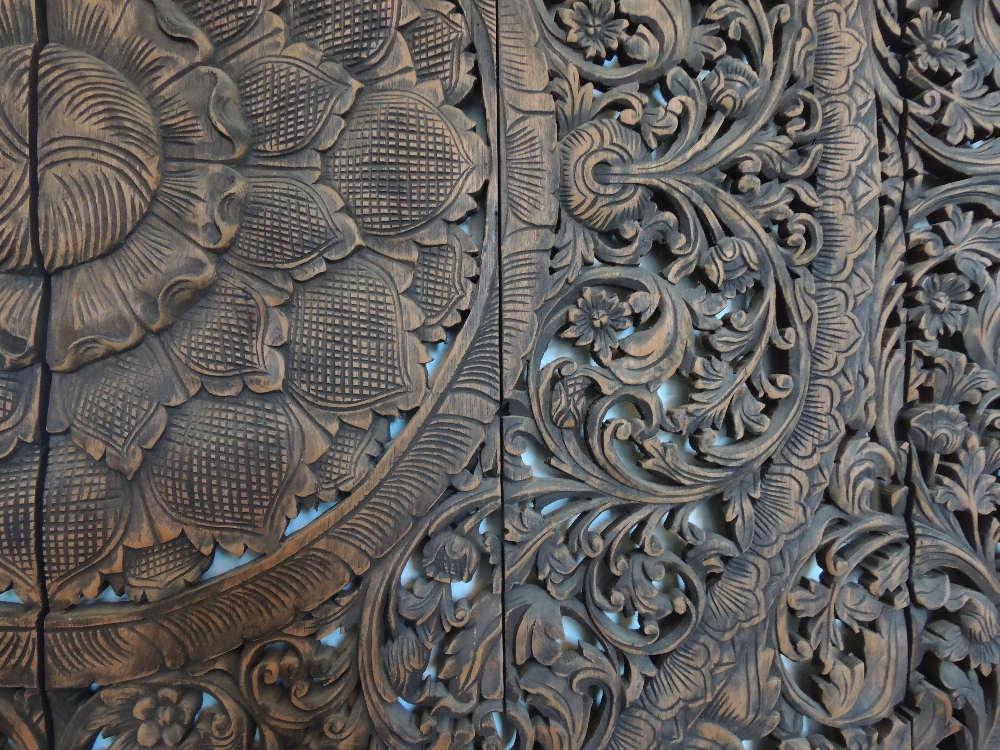

Dharma Acupuncture:
a
healing
modality which transforms both physical and emotional patterns of response.
All sessions incorporate
Acupuncture
Meditation Methods
Shamanic Soul Retrieval
to help guide patients into balance.
Dharma Acupuncture